Battery Energy Storage System (BESS) manufacturing setups in India offer attractive returns driven by falling costs, government incentives, and surging demand from renewables and EVs. ROI typically measures through metrics like Internal Rate of Return (IRR) of 13-17% and payback periods of 5-8 years for assembly-focused plants.
The Macroeconomic Imperative for Global Energy Storage
The global lithium-ion battery market, the foundational technology for modern BESS, was valued at approximately USD 134.8 billion in 2025 and is estimated to reach USD 887.8 billion by 2035, reflecting a compound annual growth rate (CAGR) of 23.3%. While electric vehicles (EVs) have historically served as the primary growth engine for battery demand, a structural rebalancing is currently underway. In 2025, battery demand for stationary storage jumped by 51%, significantly outpacing the 26% growth observed in the EV sector. This trend indicates that the energy storage industry is entering a phase of autonomous growth, driven by the need for grid flexibility and the electrification of commercial and industrial (C&I) sectors.
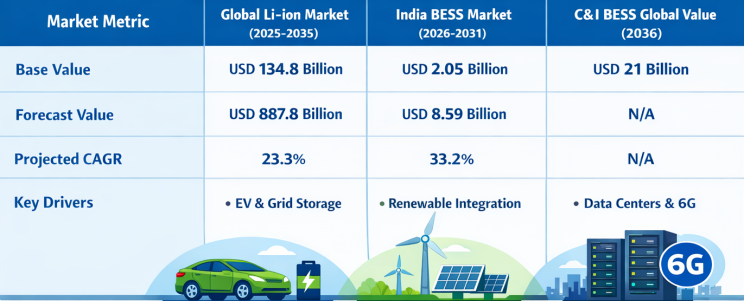
In regional terms, the Asia Pacific region continues to dominate the landscape, holding a 55.6% share by 2035, with China leading both in deployment and manufacturing scale.1nbsp;However, the North American and European markets are emerging as critical high-margin destinations for system integrators, supported by aggressive localization policies such as the US Inflation Reduction Act (IRA). India represents a particularly high-growth corridor, with its BESS market projected to expand from USD 2.05 billion in 2026 to USD 8.59 billion by 2031, representing a CAGR of 33.2%. This regional growth is anchored by the Indian government's commitment to adding 500 GW of non-fossil capacity by 2030, which creates a cumulative storage requirement of at least 188 GWh.
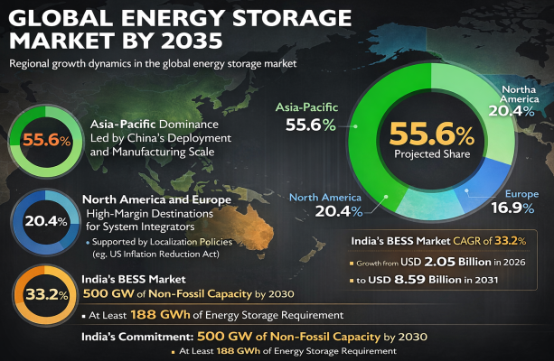
Capital Expenditure: Structural and Technical Requirements
Establishing a BESS manufacturing facility involves a massive initial capital commitment. For a giga-scale facility (defined as having a capacity of more than 1 GWh), the initial CAPEX typically exceeds USD 465 million. This investment is partitioned between land acquisition, civil works, specialized environmental control systems, and complex manufacturing machinery. The machinery itself represents approximately USD 36 million per GWh of installed capacity.
Manufacturing Machinery and Process Stages
The production process for BESS cells is a multi-stage operation involving chemical engineering, precision coating, and mechanical assembly. The machinery costs are distributed across three primary blocks:
- Electrode Manufacturing: This stage includes mixing active materials (anodes and cathodes), high-speed coating onto metal foils, drying, and calendaring to achieve the desired material consistency and thickness. In 2025, innovations like Dürr’s XCellify DC dry coating system have begun to disrupt this stage by removing the need for solvents and drying ovens, potentially reducing production space by 65% and energy consumption by 70%.
- Cell Assembly: This block involves slitting electrodes into specific widths, stacking or winding them with separators into cell cases, electrolyte filling, and sealing. The precision of stacking alignment—often requiring a CPK of ≥ 2.5—is vital for preventing internal shorts and ensuring long-term safety.
- Cell Finishing (Formation and Aging): This is the most time-consuming and space-intensive part of the process, accounting for roughly one-third of the total equipment CAPEX. Cells are charged and discharged under regulated settings to stabilize their electrochemical function and identify flaws. Advanced AI systems are now utilized to forecast faults during this stage, achieving over 85% prediction accuracy.
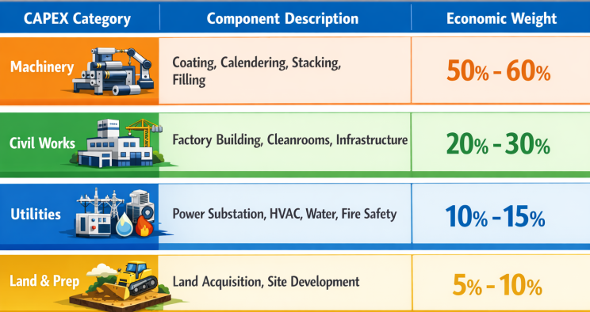
Assembly Line Costs and Automation Scaling
For entities focusing specifically on BESS assembly—integrating purchased cells into modules and racks—the CAPEX profile is different. These lines range from small-scale (≤ 100 MWh/year) prioritizing manual flexibility to large-scale (≥ 1 GWh/year) justifying full automation and digital traceability. Automation increases the initial setup cost but is necessary for utility-scale deployments where consistency in busbar installation and high-voltage insulation testing is a prerequisite for project certification and insurance. Underestimating the testing architecture in an assembly line is a common pitfall; safety non-compliance or inconsistent torque control often surfaces later as expensive field failures.
Operational Expenditure and Variable Margin Management
The ROI of a BESS manufacturing setup is highly sensitive to operational efficiencies, as the cost structure is dominated by variable expenses. Raw materials represent the single largest operational expenditure (OPEX), typically accounting for 80% to 85% of total operating costs.
Raw Material Volatility and Supply Chain Dynamics
Manufacturers are exposed to the significant price volatility of critical minerals such as lithium, cobalt, and nickel. In 2025, lithium carbonate prices experienced a sharp rebound, doubling from ¥59,000/ton to over ¥130,000/ton within six months. Such fluctuations can compress margins overnight, making long-term supply agreements and vertical integration strategies essential.
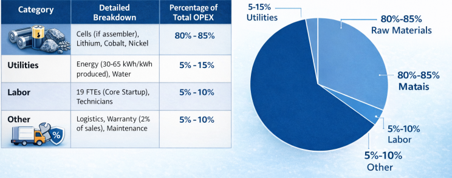
Energy Intensity and Sustainability
The manufacturing of lithium-ion batteries is an energy-intensive process. Benchmarks indicate that large-scale factories consume between 30 and 65 kWh of energy for every 1 kWh of battery capacity produced. This consumption is split between the manufacturing technology and the social/infrastructure requirements (heating, offices, HVAC).
For example, CATL’s facility in Hungary consumes approximately 34.6 kWh per kWh of production, while Samsung’s plant is slightly more efficient at 28.3 kWh. Manufacturers are increasingly locating plants in regions with low electricity costs or utilizing dedicated renewable energy sources to improve their OPEX profile and meet the stringent carbon footprint requirements of the EUs battery passport regulations.
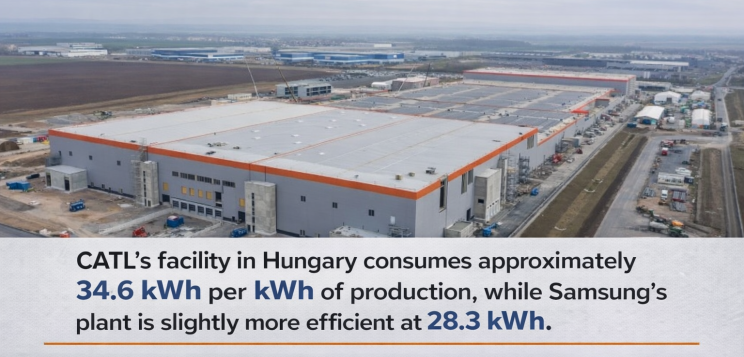
Financial Modeling of BESS Production and Deployment
A standard financial model for a BESS manufacturing plant demonstrates a high-leverage business characterized by high gross margins that must absorb significant fixed costs. In a 2026 startup model, monthly fixed overhead (excluding raw materials) is estimated at USD 228,833, requiring a substantial capital raise to cover the initial gestation period.
Revenue Streams and Profit Margins
For a 1 GWh plant, first-year revenue can reach approximately USD 192.50 million, with a gross profit margin typically between 18.5% and 30%. Net profit margins are more modest, generally ranging between 12% and 18%. The ROI is fundamentally a volume game; achieving financial success requires leveraging production scale to minimize the per-unit burden of fixed costs, which should ideally drop to about 6.5% of total sales once full capacity is reached.
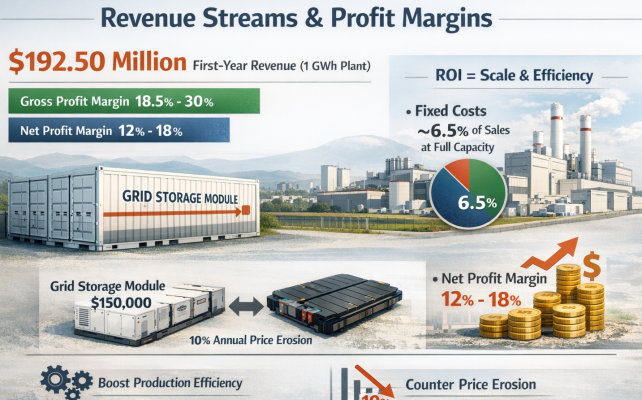
The primary revenue drivers are high-ticket items like the USD 150,000 Grid Storage Module and high-volume products like the USD 14,000 EV Battery Pack. However, manufacturers must model a 10% annual price erosion across high-value products, necessitating continuous production efficiency gains to protect net income.
Break-even Analysis and Payback Periods
The break-even point for a BESS manufacturing facility is typically reached within 4 to 6 years, depending on the scale and regional incentives. However, some giga-scale models suggest a more aggressive 20-month payback period if volume projections are hit immediately after the initial capital dip. This J-curve risk is substantial; the minimum cash projection for a giga-factory startup can hit a negative bottom of USD 266 million during the ramp-up phase.
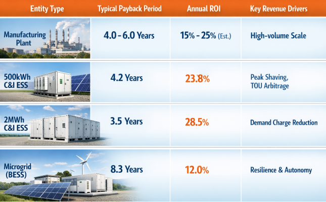
For the end-users of the manufactured products—commercial and industrial facilities—the financial logic of investing in BESS has shifted from backup power to energy autonomy. In regions with wide peak/off-peak price spreads (like Germany or South Korea), the payback for a commercial BESS can be as short as 3 to 5 years. Peak shaving remains the financially superior strategy for C&I users, delivering an IRR of 20.8% by reducing demand charges that can account for 30% to 70% of a business’s utility bill.
Policy Frameworks and Their Impact on Investment Viability
Government incentives are the most influential external factor affecting BESS manufacturing ROI. They can effectively bridge the gap between high upfront CAPEX and long-term operational profitability.
India’s PLI ACC Scheme
The National Programme on Advanced Chemistry Cell (ACC) Battery Storage is a cornerstone of India's manufacturing strategy, with a budgetary outlay of INR 18,100 crore (USD 2.08 billion). The scheme provides incentives for establishing 50 GWh of capacity, but it imposes strict requirements: a minimum investment of INR 225 crore per GWh and the achievement of 25% domestic value addition (DVA) within two years, rising to 60% within five years. Despite the high interest, implementation has been difficult; as of October 2025, only 1.4 GWh has been commissioned by Ola Electric, and no incentives have been disbursed against the targeted INR 29 billion. Manufacturers in India face significant bottlenecks, including a skilled manpower gap and dependence on imported critical equipment and minerals.
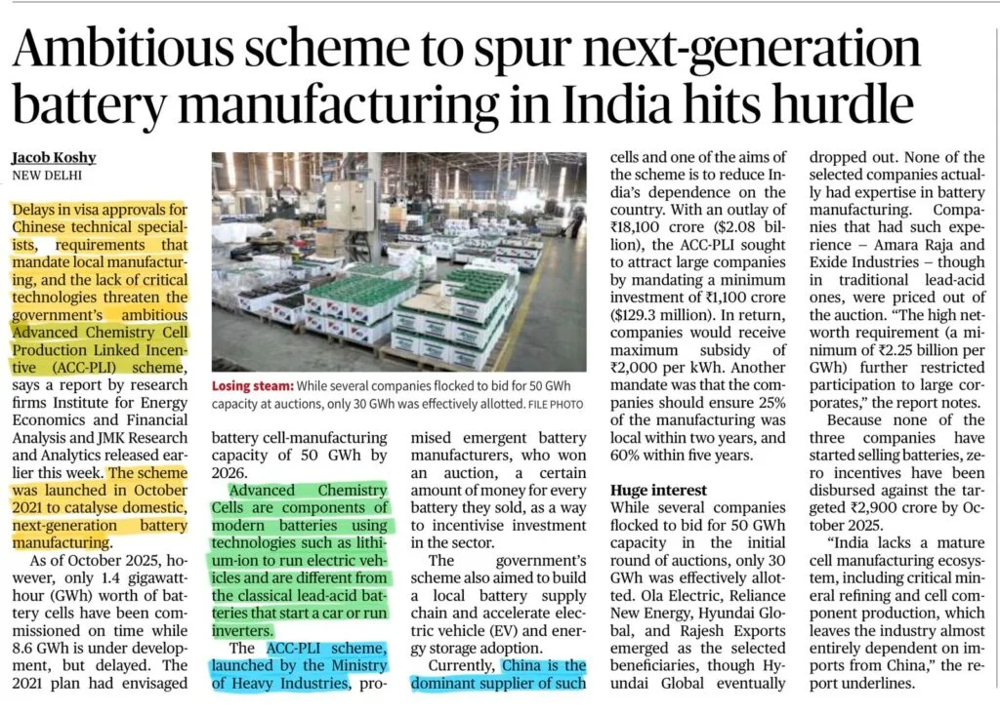
The US Inflation Reduction Act (IRA) and ITC
In the United States, the standalone Investment Tax Credit (ITC) for energy storage provides a 30% to 40% reduction in total project CAPEX. For a BESS project with an installed cost of USD 550/kWh, a 30% ITC brings the effective cost down to USD 385/kWh, drastically improving the ROI for developers and stimulating demand for domestic manufacturers. Furthermore, the 45X Manufacturing Production Tax Credit offers direct incentives for domestic cell production, though these require 50% US-made components by 2026. This policy environment has created a bifurcated global market: a low-cost, vertically integrated Chinese ecosystem and a higher-cost, subsidy-supported Western ecosystem.
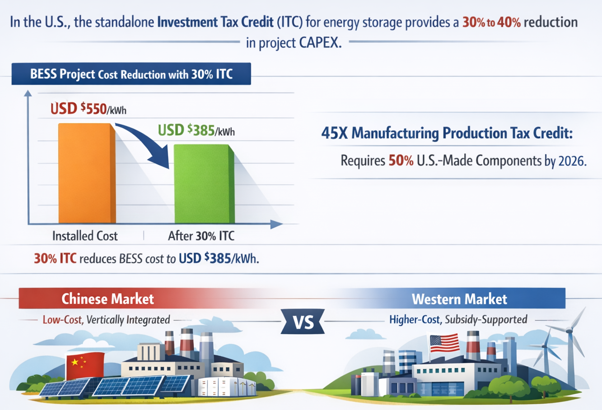
China's VAT Rebate and Export Dynamics
The global pricing of batteries is also being reshaped by Chinas policy shifts. In early 2026, China finalized a reduction in the export VAT rebate rate for battery products from 9% to 6%, with plans to eliminate it entirely by 2027. This increase in China costs is expected to be reflected in the pricing of exported batteries, potentially improving the competitive positioning of domestic manufacturing setups in other regions.
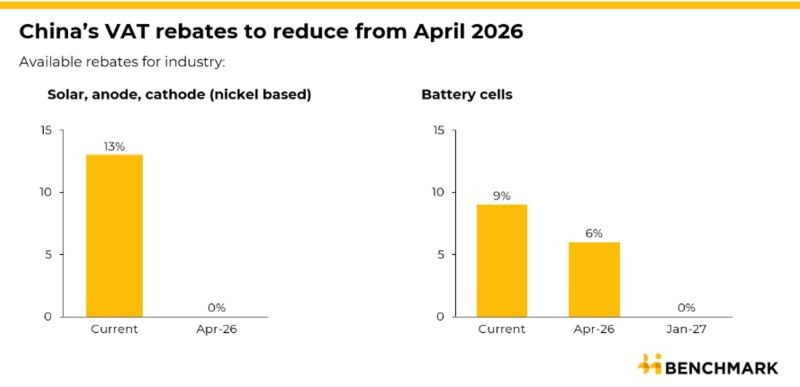
Strategic Risk Management and Future Competitive Dynamics
The BESS manufacturing sector is moving away from a cycle of reckless expansion toward a phase defined by cost-value alignment. Manufacturers must manage several emerging risks to protect their ROI:
Technology Obsolescence: The risk of The Great Battery Performance Arms Race is high. If a manufacturer delays investments in next-generation technologies like silicon anodes or solid-state integration, they risk falling behind as competitors achieve flash charging or higher energy densities.
Intellectual Property and Licensing: Patent royalties in the energy sector average between 7% and 9%. Negotiating these fees is a significant hurdle; approximately 18% of licensing negotiations stalled in 2023 due to valuation disagreements. The use of patent pools and open licensing frameworks is becoming a vital strategy for reducing transaction costs and speeding time-to-market.
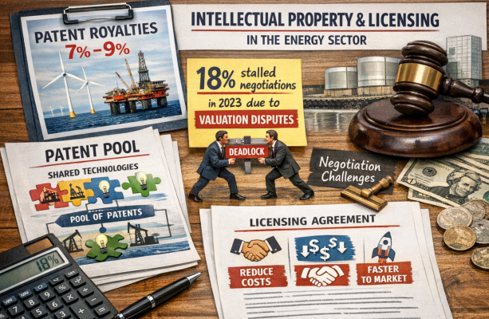
Operational Leverage: High debt service levels mean that even if a facility hits revenue targets, the actual cash left for owners can be substantially smaller than operational profit suggests. Managing debt covenants and maintaining an 87% gross margin (in high-efficiency models) is necessary to survive annual price erosion.
Grid Connection and Soft Costs: For project deployment, grid connection fees can range from USD 30/kWh to USD 100/kWh, often representing a hidden barrier to rapid project scaling. Manufacturers who offer turnkey or BESS-as-a-Service models can help customers overcome these hurdles, thereby securing their own demand pipeline.
Strategic Synthesis and Economic Outlook
The return on investment for a BESS manufacturing setup is ultimately determined by the interplay between manufacturing scale, chemical efficiency, and regulatory capture. As system pricing reaches new lows—with some project tenders in China falling to USD 63/kWh—manufacturers in higher-cost regions must focus on value-added integration and long-term lifecycle performance (LCOS) to remain competitive.
The transition to giga-scale production is no longer optional for those targeting the utility market. The ability to churn out billions of watt-hours annually allows for the absorption of high fixed costs and provides the digital traceability required by modern grid operators. While the sector remains capital-intensive and fraught with raw material risks, the structural necessity of energy storage in the 2026-2035 energy landscape ensures that BESS manufacturing remains one of the most strategic industrial opportunities of the decade. Success will belong to those who can master the Golden Ratio of cell design, navigate the complexity of global trade policies, and deliver a levelized cost of storage that makes renewable energy not just intermittent, but dispatchable on demand.